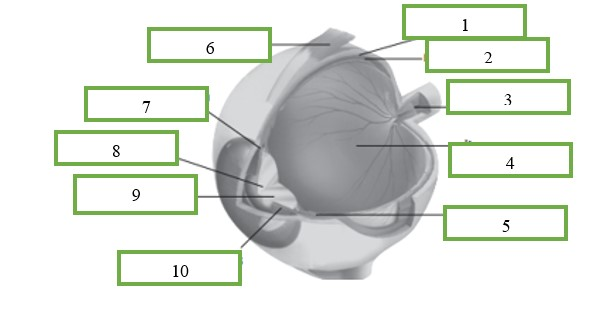

<!DOCTYPE html>
<html lang="en">

<head>
  <meta charset="utf-8">
  <meta content="width=device-width, initial-scale=1.0" name="viewport">

  <title>Sistem indra penglihatan </title>
  <meta content="" name="description">
  <meta content="" name="keywords">

  <link href="assets/img/favicon.png" rel="icon">
  <link href="assets/img/apple-touch-icon.png" rel="apple-touch-icon">
  <link href="https://fonts.gstatic.com" rel="preconnect">
  <link href="https://fonts.googleapis.com/css?family=Open+Sans:300,300i,400,400i,600,600i,700,700i|Nunito:300,300i,400,400i,600,600i,700,700i|Poppins:300,300i,400,400i,500,500i,600,600i,700,700i" rel="stylesheet">
  <script src="https://kit.fontawesome.com/2a1b285329.js" 
	crossorigin="anonymous"></script>
    <link rel="stylesheet" href="https://cdnjs.cloudflare.com/ajax/libs/font-awesome/5.15.4/css/all.min.css">
  <link rel="stylesheet" href="https://stackpath.bootstrapcdn.com/bootstrap/5.0.0-alpha2/css/bootstrap.min.css" 
  integrity="sha384-DhY6onE6f3zzKbjUPRc2hOzGAdEf4/Dz+WJwBvEYL/lkkIsI3ihufq9hk9K4lVoK" 
  crossorigin="anonymous">
  <link rel="stylesheet" href="https://cdn.jsdelivr.net/npm/bootstrap-icons@1.3.0/font/bootstrap-icons.css">

  <link href="../../css/style.css" rel="stylesheet">
  <link href="../sistem indra/css/modal.css" rel="stylesheet">


</head>

<body>

  <!--tampilan header-->
  <header id="header" class="header fixed-top d-flex align-items-center">

    <div class="d-flex align-items-center justify-content-between">
        <span class="d-none d-lg-block"><i class="fa-solid fa-dna"></i> Sistem Koordinasi</span>
      </a>
      <i class="bi bi-list toggle-sidebar-btn"></i>
    </div>
  </header>

     <!-- tampilan sidebar-->
     <aside id="sidebar" class="sidebar">

      <ul class="sidebar-nav" id="sidebar-nav">    
        <li class="nav-item">
          <a class="nav-link collapsed" data-bs-target="#list-nav" data-bs-toggle="collapse" href="#">
            <i class="fa-solid fa-book"></i><span>Sistem Saraf</span><i class="bi bi-chevron-down ms-auto"></i>
          </a>
          <ul id="list-nav" class="nav-content collapse " data-bs-parent="#sidebar-nav">
            <li>
              <a href="../../index.html">
                <i class="bi bi-circle"></i><span>1.1 Struktur Sistem saraf</span>
              </a>
            </li>
            <li>
              <a href="../sistem saraf/sistemsarafpusat2.html">
                <i class="bi bi-circle"></i><span>1.2 Sistem Saraf Pusat</span>
              </a>
            </li>
            <li>
              <a href="../sistem saraf/sistemsarafpusatp4.html">
                <i class="bi bi-circle"></i><span>1.3 Sistem saraf tepi</span>
              </a>
            </li>
          <a href="../sistem saraf/kuis1.html">
            <i class="bi bi-circle"></i><span>Quiz</span>
          </a>
        </li>
      </ul>
  
  
        <li class="nav-item">
          <a class="nav-link collapsed" data-bs-target="#list2-nav" data-bs-toggle="collapse" href="#">
            <i class="fa-solid fa-book"></i><span>Sistem Indra</span><i class="bi bi-chevron-down ms-auto"></i>
          </a>
          <ul id="list2-nav" class="nav-content collapse " data-bs-parent="#sidebar-nav">
            <li>
              <a href="../sistem indra/sistemindraperasap1.html">
                <i class="bi bi-circle"></i><span>2.1 Indra Perasa</span>
              </a>
            </li>
            <li>
              <a href="../sistem indra/sistemindrapengecap1.html">
                <i class="bi bi-circle"></i><span>2.2 Indra pengecap</span>
              </a>
            </li>
            <li>
            <a href="../sistem indra/sistemindrapenciuman1.html">
              <i class="bi bi-circle"></i><span>2.3 Indra Penciuman</span>
            </a>
            </li>
            <li>
            <a href="../sistem indra/sistemindrapendengaran1.html">
              <i class="bi bi-circle"></i><span>2.4 Indra pendengaran</span>
            </a>
            </li>
            <li>
            <a href="../sistem indra/sistemindrapenglihatan1.html">
              <i class="bi bi-circle"></i><span>2.5 Indra penglihatan</span>
            </a>
          </li>
          <li>
            <a href="../sistem indra/kuis2.html">
              <i class="bi bi-circle"></i><span>Quiz</span>
            </a>
          </li>        
        </ul>
  
        <li class="nav-item">
          <li class="nav-item">
            <a class="nav-link collapsed" data-bs-target="#list3-nav" data-bs-toggle="collapse" href="#">
              <i class="fa-solid fa-book"></i><span>Sistem endokrin</span><i class="bi bi-chevron-down ms-auto"></i>
            </a>
            <ul id="list3-nav" class="nav-content collapse " data-bs-parent="#sidebar-nav">
              <li>
                <a href="../sistem endokrin/sistemendokrin1.html">
                  <i class="bi bi-circle"></i><span>3.1 sistem endokrin manusia</span>
                </a>
              </li>
              <li>
                <a href="../sistem endokrin/kuis3.html">
                  <i class="bi bi-circle"></i><span>Quiz</span>
                </a>
              </li>
            </ul>
          </li>
  
          <li class="nav-item">
            <a class="nav-link " href="../../evaluasi.html">
              <i class="fa-regular fa-square-check"></i>
              <span>Evaluasi</span>
            </a>
          </li>
  
          <li class="nav-item">
            <a class="nav-link " href="../../home.html">
              <i class="fa-solid fa-house"></i>
              <span>Beranda</span>
            </a>
          </li>
    </aside>

  <main id="main" class="main">
    <section class="section dashboard">   
      <div class="content-card2">      
        <div class="card-header-2">5. Mata (indra penglihatan)</div>
        <div class="content-card">
          <div class="dlm m-2">
           Mata berfungsi sebagai alat pengenal warna maupun bentuk. Hal ini dimungkinkan dengan reseptor khusus cahaya yang disebut fotoreseptor.Setiap mata mempunyai suatu lapisan reseptor, 
           yaitu lensa untuk memfokuskan cahaya pada reseptor cahaya, dan sel-sel saraf untuk menghantarkan impuls dari reseptor ke otak.
           </div>
           <br>
        
           <div class="container text-center">
            <div class="row">
              <div class="col-md-2 flex-column">
                <button class="myButton" id="myBtn" type="submit">Nomer 1</button><br><br>

                <div id="myModal0" class="modal">
                  <!-- Modal content -->
                  <div class="modal-content">
                    <span class="close0">&times;</span>
                    <p>Otot siliaris berfungsi mengubah bentuk lensa di dalam mata, bukan ukuran pupil.</p>
                  </div>
                </div>

                <button class="myButton" id="myBtn2" type="submit">Nomer 2</button><br><br>
                <div id="myModal2" class="modal">
                  <!-- Modal content -->
                  <div class="modal-content">
                    <span class="close2">&times;</span>
                    <p>Kornea berfungsi mencegah kotoran dan benda asing, serta menyaring sinar UV yang masuk ke mata.</p>
                  </div>
                </div>

                <button class="myButton" id="myBtn3" type="submit">Nomer 3</button><br><br>
                <div id="myModal3" class="modal">
                  <!-- Modal content -->
                  <div class="modal-content">
                    <span class="close3">&times;</span>
                    <p>Iris berfungsi memberikan warna pada bola mata dan dilengkapi dengan otot kecil yang melebarkan atau mengecilkan pupil, untuk mengatur cahaya masuk..</p>
                  </div>
                </div>

                <button class="myButton" id="myBtn4" type="submit">Nomer 4</button><br><br>
                <div id="myModal4" class="modal">
                  <!-- Modal content -->
                  <div class="modal-content">
                    <span class="close4">&times;</span>
                    <p>Fungsi pupil adalah mengatur berapa banyak cahaya yang masuk ke dalam mata.</p>
                  </div>
                </div>

                <button class="myButton" id="myBtn5" type="submit">Nomer 5</button><br><br>
                <div id="myModal5" class="modal">
                  <!-- Modal content -->
                  <div class="modal-content">
                    <span class="close5">&times;</span>
                    <p>Aqueous humour berfungsi memberikan nutrisi (berupa glukosa dan asam amino) kepada jaringan-jaringan mata di segmen anterior, seperti lensa, kornea dan TM.</p>
                  </div>
                </div>

                <button class="myButton" id="myBtn6" type="submit">Nomer 6</button><br><br>
                <div id="myModal6" class="modal">
                  <!-- Modal content -->
                  <div class="modal-content">
                    <span class="close6">&times;</span>
                    <p>Lensa mata berfungsi untuk memfokuskan cahaya agar bayangan suatu benda dapat jatuh tepat di retina.</p>
                  </div>
                </div>
  
                <button class="myButton" id="myBtn7" type="submit">Nomer 7</button><br><br>
                <div id="myModal7" class="modal">
                  <!-- Modal content -->
                  <div class="modal-content">
                    <span class="close7">&times;</span>
                    <p>Vitreous humor berfungsi untuk menjaga bentuk bola mata. Cairan ini mengisi ruang antara lensa dan retina, sehingga membantu menjaga bentuk bola mata agar tetap bulat.</p>
                  </div>
                </div>

              </div>

              <div class="col-md-8">
                
                <!-- The Modal -->
                <div id="myModal" class="modal">
                  <span class="close">&times;</span>
                  
                  <div id="caption"></div>
                </div>
                <figcaption>
                  <span>Gambar mata dan bagiannya</span>
              </figcaption>
              </div>  

              <div class="col-md-2 flex-column">
              <button class="myButton" id="myBtn8" type="submit">Nomer 8</button><br><br>
              <div id="myModal8" class="modal">
                <!-- Modal content -->
                <div class="modal-content">
                  <span class="close8">&times;</span>
                  <p>Skelera berfungsi untuk mempertahankan bentuk bola mata dan melindungi bagian penting di dalam mata, seperti retina dan lensa mata.</p>
                </div>
              </div>

              <button class="myButton" id="myBtn9" type="submit">Nomer 9</button><br><br>
              <div id="myModal9" class="modal">
                <!-- Modal content -->
                <div class="modal-content">
                  <span class="close9">&times;</span>
                  <p>Koroid berfungsi adalah untuk menyuplai oksigen dan nutrisi untuk bagian-bagian mata lainnya, terutama retina,</p>
                </div>
              </div>

              <button class="myButton" id="myBtn10" type="submit">Nomer 10</button><br><br>
                <div id="myModal10" class="modal">
                  <!-- Modal content -->
                  <div class="modal-content">
                    <span class="close10">&times;</span>
                    <p>Retina berfungsi memicu impuls saraf melalui saraf optik ke otak untuk membentuk penglihatan.</p>
                  </div>
                </div>

                <button class="myButton" id="myBtn100" type="submit">Nomer 11</button><br><br>
                <div id="myModal100" class="modal">
                  <!-- Modal content -->
                  <div class="modal-content">
                    <span class="close100">&times;</span>
                    <p>Bintik kuning adalah bagian dari retina yang berfungsi sebagai tempat terbentuknya bayangan yang jelas.</p>
                  </div>
                </div>

                <button class="myButton" id="myBtn12" type="submit">Nomer 12</button><br><br>
                <div id="myModal12" class="modal">
                  <!-- Modal content -->
                  <div class="modal-content">
                    <span class="close12">&times;</span>
                    <p>Saraf optik Fungsinya adalah untuk meneruskan sebuah rangsang cahaya hingga ke otak. </p>
                  </div>
                </div>

                <button class="myButton" id="myBtn13" type="submit">Nomer 13</button><br><br>
                <div id="myModal13" class="modal">
                  <!-- Modal content -->
                  <div class="modal-content">
                    <span class="close13">&times;</span>
                    <p>Bintik buta berfungsi untuk meneruskan dan membelokkan berkas saraf menuju otak.</p>
                  </div>
                </div>

                

              </div>
              </div>
              </div>
              <br>

              <div class="content-card2">
                <div class="dlm m-2">
                  Agar mengetahui apa saja bagian yang ada pada mata sebagai indra penglihat silahkan isi <input type="button" value="Aktivitas" onclick="togglePp()"> mengenai quiz drag and drop dibawah ini
                </div>
              </div>
      
              <div id="info1">
              <div class="card-header-2">Aktivitas</div>
              <div class="content-card2">
                <div class="dlm m-2"></div>
                  <figure>
                    <center>
                    
                </center>
                </figure>

                <p>
                  isilah table di bawah ini berdasarkan nomer yang tertera pada gambar diatas.
              </p>
              <center>
                  <table class="table table-bordered text-center" style="width:100%">
                      <thead class="table-dark">
                        <tr>
                          <th style="width:5%;">No</th>
                          <th style="width:20%;">Nama</th>
                          <th style="width:3%;">Hasil</th>
                          <th style="width:20%;">pilihan jawaban</th>
                        </tr>
                      </thead>
                      <tbody>
                        <tr>
                          <td>1</td>
                          <td id="div1" ondragstart="drag(event)" ondrop="drop(event)" ondragover="allowDrop(event)"></td>
                          <td><p id="ket1"></p></td>
                          <td rowspan="12" ondrop="drop(event)" draggable="true" ondragstart="drag(event)" ondragover="allowDrop(event)">
                          <center>
                            <div id="drag1" draggable="true" ondragstart="drag(event)" ondragover="allowDrop(event)" class="dragdrop">Sklera</div>
                            <div id="drag5" draggable="true" ondragstart="drag(event)" ondragover="allowDrop(event)" class="dragdrop">badan silliaris</div>
                            <div id="drag8" draggable="true" ondragstart="drag(event)" ondragover="allowDrop(event)" class="dragdrop">pupil</div>
                            <div id="drag3" draggable="true" ondragstart="drag(event)" ondragover="allowDrop(event)" class="dragdrop">Saraf penglihatan</div>
                            <div id="drag6" draggable="true" ondragstart="drag(event)" ondragover="allowDrop(event)" class="dragdrop">otot mata</div>
                            <div id="drag9" draggable="true" ondragstart="drag(event)" ondragover="allowDrop(event)" class="dragdrop">lensa</div>
                            <div id="drag2" draggable="true" ondragstart="drag(event)" ondragover="allowDrop(event)" class="dragdrop">Retina</div>
                            <div id="drag7" draggable="true" ondragstart="drag(event)" ondragover="allowDrop(event)" class="dragdrop">kornea</div>
                            <div id="drag10" draggable="true" ondragstart="drag(event)" ondragover="allowDrop(event)" class="dragdrop">iris</div>
                            <div id="drag4" draggable="true" ondragstart="drag(event)" ondragover="allowDrop(event)" class="dragdrop">viterous humor</div>
                          </center>
                          </td>
                        </tr>
              
                        <tr>
                          <td>2</td>
                          <td id="div2" ondragstart="drag(event)" ondrop="drop(event)" ondragover="allowDrop(event)"></td>
                          <td><p id="ket2"></p></td>
                        </tr>
              
                        <tr>
                          <td>3</td>
                          <td id="div3" ondragstart="drag(event)" ondrop="drop(event)" ondragover="allowDrop(event)"></td>
                          <td><p id="ket3"></p></td>
                        </tr>
              
                        <tr>
                          <td>4</td>
                          <td id="div4" ondragstart="drag(event)" ondrop="drop(event)" ondragover="allowDrop(event)"></td>
                          <td><p id="ket4"></p></td>
                        </tr>
              
                        <tr>
                          <td>5</td>
                          <td id="div5" ondragstart="drag(event)" ondrop="drop(event)" ondragover="allowDrop(event)"></td>
                          <td><p id="ket5"></p></td>
                        </tr>
              
                        <tr>
                          <td>6</td>
                          <td id="div6" ondragstart="drag(event)" ondrop="drop(event)" ondragover="allowDrop(event)"></td>
                          <td><p id="ket6"></p></td>
                        </tr>
              
                        <tr>
                          <td>7</td>
                          <td id="div7" ondragstart="drag(event)" ondrop="drop(event)" ondragover="allowDrop(event)"></td>
                          <td><p id="ket7"></p></td>
                        </tr>
              
                        <tr>
                          <td>8</td>
                          <td id="div8" ondragstart="drag(event)" ondrop="drop(event)" ondragover="allowDrop(event)"></td>
                          <td><p id="ket8"></p></td>
                        </tr>
              
                        <tr>
                          <td>9</td>
                          <td id="div9" ondragstart="drag(event)" ondrop="drop(event)" ondragover="allowDrop(event)"></td>
                          <td><p id="ket9"></p></td>
                        </tr>
      
                        <tr>
                          <td>10</td>
                          <td id="div10" ondragstart="drag(event)" ondrop="drop(event)" ondragover="allowDrop(event)"></td>
                          <td><p id="ket10"></p></td>
                        </tr>
                      </tbody>
                    </table>
                    <a onclick="cek()" class="btn btn-success"><b>Cek Jawaban</b></a>
              </center>
              <br>
              <div class="dlm m-2">
                Setelah kita menyelesaikan quiz box pada Aktivitas 7 tentang indra penglihatan yaitu tmata maka kita dapat mengetahui bagian apa saja yang memiliki peranan penting pada mata dalam menangkap cahaya serta memproyeksikannya menjadi visual.
              </div>
                </div>
                </div>
                <br>
      

            <div class="dlm m-2">
              Retina mata tersusun oleh kurang lebih 125 juta sel batang (sel basilus) yang 
              mampu menerima rangsang cahaya yang tidak berwarna, dan kurang lebih 6,5 juta sel 
              kerucut (sel konus) yang mampu menerima rangsang sinar yang berwarna.</div>

          <div class="dlm m-2">
            Pada sel batang terdapat pigmen yang peka terhadap rangsang cahaya, disebut 
            rodopsin, yaitu bentuk persenyawaan antara vitamin A dengan suatu protein. Pada sel 
            kerucut juga terdapat pigmen yang disebut iodopsin yaitu sejenis pigmen yang 
            terbentuk dari persenyawaan retinin dan opsin.
          </div>
          
          <figure>
            <center>
              
              <!-- The Modal -->
              <div id="myModal22" class="modal">
                <span class="close1">&times;</span>
                
                <div id="caption1"></div>
              </div>
            <figcaption>
              <span>Gambar 13 bentuk mata saat melihat benda</span>
            </figcaption>
        </center>
        </figure>

        <div class="dlm m-2">
          Mencembung dan mencekungnya lensa mata dapat mengalami perubahan. 
          Proses mencembung dan mencekungnya mata disebabkan kontraksi dan relaksasi otototot ligamen (badan siliaris) yang melekat pada bola mata. Dengan kemampuan lensa 
          mata untuk mencembung dan mencekung maka fokus lensa mata dengan sendirinya 
          dapat berubah-ubah. Kemampuan mata seperti itu disebut daya akomodasi lensa mata</div>

          <div class="dlm m-2">
            Terdapat beberapa kelainan yang terjadi pada mata antara lain sebagai berikut:
            <br><br>
            <ol>
              <li> Mata Tua (Presbiopi) 
                Presbiopi adalah kelainan mata yang terjadi sebagai akibat tidak lenturnya lensa mata. 
              </li><br>
              <li>
                Rabun Dekat (Hipermetropi) 
                Pada gangguan mata hipermetropi keadaan retinanya lebih pendek dari jarak 
                normalnya. 
              </li><br>
              <li>
                Miopi (Rabun Jauh)
                karena bola mata berbentuk lonjong dan lebih panjang dari keadaan 
                normalnya sehingga dengan keadaan seperti itu, jarak antara lensa mata dan 
                retina menjadi lebih jauh. 
              </li><br>
              <li>
                Astigmatisma Astigmatisma
                terjadi karena bentuk lengkungan pada permukaan kornea tidak merata. 
                Garis-garis vertikal dan horizontal tidak dapat difokuskan secara simultans. 
              </li>
            </ol>
          </div>
          </div>
        
        


        <div class="card-header-2">Mari mencoba</div>
        <div class="content-card">
          Mari kita simak <input type="button" value="video" onclick="toggleP()"> dibawah ini untuk mengidentifikasi letak bintik buta terutama  peranan indra penglihatan dalam system koordinasi dengan proses pendemonstrasian
          <center>
            <div id="info">
            <br>
          <figure>
            <iframe width="560" height="315" src="../../../video praktikum/titik buta.mp4"
            title="YouTube video player" frameborder="0"
            allow="accelerometer; autoplay; clipboard-write; encrypted-media; gyroscope; picture-in-picture"
            allowfullscreen></iframe>
            <center style="margin-top:8px !important;"><span></span></center>
          </figure>
          <br>
          </center>
      </div>
   
      <div class="card-header-2"> pertanyaan 8</div>
      <div class="content-card">
                        <!-- contoh soal latihan -->
                        <div class="latihan">
                              <!-- soal 1 -->
                                <div id="soal1">
                                  <form action="#">
                                      <p>1. Bagian manakah yang paling banyak mengandung fotoreseptor?</p>
                                      <input type="radio" id="1a" name="radio-group">
                                      <label for="1a">pupil mata</label><br>
                                      <input type="radio" id="1b" name="radio-group">
                                      <label for="1b">selaput Mata</label><br>
                                      <input type="radio" id="1c" name="radio-group">
                                      <label for="1c">bintik kuning Mata</label><br>
                                      <input type="radio" id="1d" name="radio-group">
                                      <label for="1d">bintik buta Mata</label><br>
                                      <input type="radio" id="1e" name="radio-group">
                                      <label for="1d">bintik tengah Mata</label><br>
                                  </form>
                                </div>
                                <div class="cekreset mt-2">
                                  <a onclick="cekjawaban1()" class="btn btn-primary">Cek Jawaban</a>
                                  <a id="reset1" class="btn btn-primary">Ulang</a>
                                </div>
                                <div class="mt-2" id="pembahasan1"></div>
                                
                                <br>
                                <div id="soal2">
                                  <form action="#">
                                      <p>2. pada jarak berapakah bintik buta mulai muncul pada percobaan tersebut?                                                                            
                                      <input type="radio" id="2a" name="radio-group">
                                      <label for="2a">20 cm</label><br>
                                      <input type="radio" id="2b" name="radio-group">
                                      <label for="2b">14 cm</label><br>
                                      <input type="radio" id="2c" name="radio-group">
                                      <label for="2c">25 cm</label><br>
                                      <input type="radio" id="2d" name="radio-group">
                                      <label for="2d">13 cm</label><br>
                                      <input type="radio" id="2e" name="radio-group">
                                      <label for="2d">12 cm</label><br>
                                  </form>
                                </div>
                                <div class="cekjawabanreset mt-2">
                                  <button type="button" class="btn btn-primary" onclick="cekjawaban2()">Cek Jawaban</button>
                                  <button type="button" class="btn btn-primary" id="reset2">Ulang</button>
                                </div>
                                <div class="mt-2" id="pembahasan2"></div>
                              </div>
                            </div>
                          </div>
                          </div>
        
</section>
  </main>

  <!--footer-->
  <div class="footer-nav">
    <a href="sistemindrapendengaran1.html" class="footer-number">Sebelumnya</a>
    <a href="sistemindrapenciuman1.html" class="footer-number">4</a>
    <a href="sistemindrapendengaran1.html" class="footer-number">5</a>
    <a href="sistemindrapenglihatan1.html" class="footer-number">6</a>
    <a href="kuis2.html" class="footer-number">Selanjutnya</a>
</div>
</div>
</div>
  <script src="https://cdn.jsdelivr.net/npm/bootstrap@5.0.2/dist/js/bootstrap.bundle.min.js" 
  integrity="sha384-MrcW6ZMFYlzcLA8Nl+NtUVF0sA7MsXsP1UyJoMp4YLEuNSfAP+JcXn/tWtIaxVXM" 
  crossorigin="anonymous"></script>
  <script src="pertanyaan8.js"></script>
  <script src="js/main.js"></script>
  <script src="drag.js"></script>
  <script src="../sistem indra/modul.js"></script>
  
  <script>
    function toggleP() {
      let p = document.getElementById("info");
      if (p.style.display === "none") {
          p.style.display = "block";
      } else {
          p.style.display = "none";
      }
    }
  </script>

<script>
  function togglePp() {
    let p = document.getElementById("info1");
    if (p.style.display === "none") {
        p.style.display = "block";
    } else {
        p.style.display = "none";
    }
  }
</script>

<script>
// Get the modal gambar zoom
  var modal = document.getElementById("myModal22");
  
  // Get the image and insert it inside the modal - use its "alt" text as a caption
  var img = document.getElementById("myImg22");
  var modalImg = document.getElementById("img0122");
  var captionText = document.getElementById("caption");
  img.onclick = function(){
    modal.style.display = "block";
    modalImg.src = this.src;
    captionText.innerHTML = this.alt;
  }
  
  // Get the <span> element that closes the modal
  var span = document.getElementsByClassName("close")[0];
  
  // When the user clicks on <span> (x), close the modal
  span.onclick = function() { 
    modal.style.display = "none";
  }
  </script>

<script>
  // Get the modal
  var modal = document.getElementById("myModal");
  
  // Get the image and insert it inside the modal - use its "alt" text as a caption
  var img = document.getElementById("myImg");
  var modalImg = document.getElementById("img01");
  var captionText = document.getElementById("caption");
  img.onclick = function(){
    modal.style.display = "block";
    modalImg.src = this.src;
    captionText.innerHTML = this.alt;
  }
  
  // Get the <span> element that closes the modal
  var span = document.getElementsByClassName("close")[0];
  
  // When the user clicks on <span> (x), close the modal
  span.onclick = function() { 
    modal.style.display = "none";
  }
  </script>


</body>
</html>